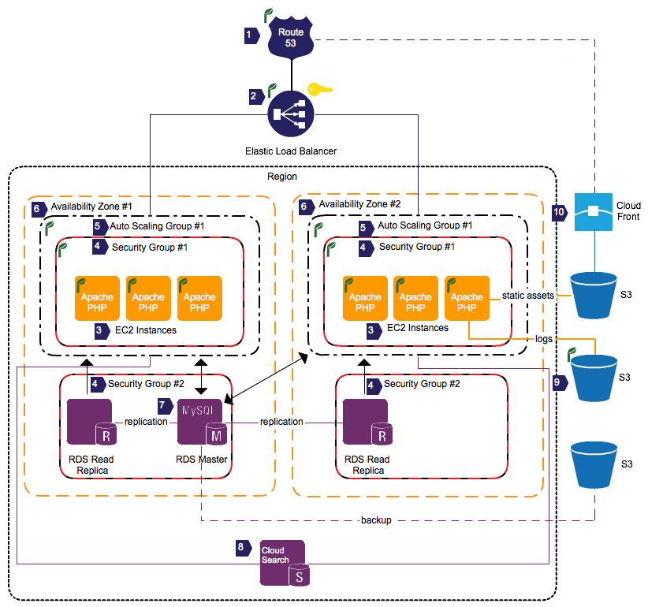

In this document I propose a reference architecture based on Amazon Web Services (AWS) for a LAMP website that is a simple user notebook.
The notebook website is a multi-tenant web application where users can login and then create, view, edit, and save any number of text strings (“notes”). Notes may be private or public and users can perform full text search on all public notes. The website has 1 million active users.
The Architecture
Below is a diagram of the proposed architecture, which is in part based on the Amazon Elastic Beanstalk PaaS offering.
- Users DNS requests are served by Amazon Route 53, a highly available DNS service. In this case Route 53 is provisioned as part of the Elastic Beanstalk application.
- HTTP(S) requests destined for the notebook web application servers are first handled by Elastic Load Balancing (ELB). The ELB scales load balancing capacity based on demand and provides for fault-tolerance and scalability by monitoring web application server health and distributing traffic to healthy servers in multiple Availability Zones (AZs). In this case, because the application requires user authentication and users could potentially be storing sensitive notes, the ELB is configured to handle HTTPS requests via AWS Identity and Access Management (AWS IAM). ELB is provisioned as part of the Elastic Beanstalk application.
- The application servers running Apache and PHP are Amazon Elastic Compute Cloud (EC2) instances that are based on Amazon Machine Images (AMIs) provided by Amazon for Elastic Beanstalk. These EC2 instances can be customized, either by customizing the underlying Elastic Beanstalk AMIs, or via configuration files. It is also worth noting that all EC2 instances have Amazon CloudWatch basic monitoring enabled by default and additional metrics are available if necessary.
- The application server EC2 instances as well as the Amazon RDS instances are contained in Amazon EC2 Security Groups (Security Groups). Security groups act as firewalls, and in this case would be configured to allow ingress on ports 80 and 443 to the web application servers and access the RDS instances would be locked down to only EC2 instances in the Security Group labeled Security Group #1.
- The web application servers are deployed in an Auto Scaling group, which automatically adjusts capacity up and down based on configuration. Auto Scaling uses metrics from Amazon CloudWatch to trigger scaling events, and Auto Scaling itself can be monitored via CloudWatch if necessary.
- Availability Zones (AZs) are distinct geographic locations designed to insulate against failures in other AZs. In this example the Auto Scaling group that contains the web application servers, Auto Scaling Group #1, spans multiple AZs to provide for high availability. In addition a RDS read replica is deployed to Availability Zone #2 that can be used for failover in the case of problems with Availability Zone #1.
- The database for the notebook application is provided by the Amazon Relational Database Service (Amazon RDS) running one master instance of MySQL deployed in Availability Zone #1 along with Amazon RDS Read Replicas in each AZ. The Read Replicas increase scalability by offloading database reads that can tolerate some replication lag from the RDS master instance and increase availability by serving as a failover should the master’s AZ become unavailable. The Amazon RDS database is also automatically backed up to S3 on a daily basis and change logs are continuously backed up providing for point-in-time recovery. Additional Amazon CloudWatch metrics are also provided for Amazon RDS instances by default.
- Full text search queries are serviced by Amazon CloudSearch, a fully managed search solution. Amazon CloudSearch scales up and down automatically as the amount of data or query volume changes. Access to Amazon CloudSearch search domains is currently limited by IP, so configuration scripts or search proxies (not pictured) would need to be used to secure the search domain.
- Web application log files, database backups, and static resources for the notebook application are stored on Amazon Simple Storage Service (Amazon S3), a highly durable data store.
- Static content is served via Amazon CloudFront, a service for content delivery that uses a global network of edge locations to deliver content with the best possible performance.
Discussion
Continuous Delivery
The developers of the notebook application publish updates several times a day. By leveraging the application features of Elastic Beanstalk developers can use the AWS Command Line Tools to deploy the application using Git any time they choose. Depending on the preferred workflow developers may choose something as simple as pushing master to the Elastic Beanstalk production environment, or something more robust, such as mapping specific branches to specific environments. (Note this does not take into consideration continuous integration. It is assumed that if the developers are deploying code several times a day a robust system of automated tests is already in place. Having said that, the environment feature of Elastic Beanstalk could certainly be used to provide a staging environment in a continuous integration system.)
Another benefit of using Elastic Beanstalk is that application deployments are versioned and archived, so rolling back is as simple as selecting a previous application version and deploying it to a selected environment.
Hardware Failure
Hardware failures in the AWS cloud are a given and needs to planned for accordingly. I will discuss failure detection and remediation for each layer of the infrastructure in turn.
Route 53
To monitor this I would use an external monitoring service such as Pingdom or New Relic. Remediation steps should a failure be detected would involve migrating to another DNS provider.
Elastic Load Balancing
Elastic Load Balancers have ten pre-selected metrics monitored at one-minute frequency by Amazon CloudWath, free of charge. Alerts can be configured if certain thresholds are breached, which could alter you to any potential issues. Also, because this ELB is part of an Elastic Beanstalk environment, it is monitored as part of application health check. Again, external monitoring from a service provider would also be recommend to help with alerting in the case of an ELB failure. Should an Elastic Load Balancer fail another one would need to be provisioned for the Elastic Beanstalk environment, either via the web based AWS Management Console or the AWS API.
Web Application Servers
Each EC2 instance has ten pre-selected metrics monitored at five-minute frequency by Amazon CloudWatch, free of charge. Detailed monitoring can also be enabled, for an additional charge, which provides seven pre-selected metrics at one-minute frequency. As with Elastic Load Balancing, Amazon CloudWatch alerts can be configured for the EC2 instances. Because these servers are part of an Elastic Beanstalk platform, the are also monitored as part of the application health check. In addition to environment-level health checking, AWS Elastic Beanstalk also communicates with every Amazon EC2 instance running in the Elastic Beanstalk application. If any Amazon EC2 instance fails to respond to ten consecutive health checks, Elastic Beanstalk will terminate the instance, and Auto Scaling will start a new instance.
Database Servers
Again Amazon RDS DB instances have thirteen pre-selected metrics monitored at one-minute frequency by Amazon CloudWatch, free of charge. As with other CloudWatch monitored services alerts can be configured. The databases could also be monitored indirectly via Elastic Beanstalk using a custom application health check URL that tests database connectivity from the application. Should a failure be detected in one of the Read Replicas, queries could continue to be serviced from the remaining Read Replica until the failed replica is reprovisioned. Should the master instance fail a Read Replica could be promoted to master or a new master instance could be provisioned from backup. This assumes some tolerance for unavailability and potentially data loss in the case of a master failure, as the failover process is manual.
Should this be unacceptable, Amazon RDS could be deployed in a Multi-AZ configuration for enhanced availability and durability. Under this configuration Amazon RDS automatically creates a primary DB instance and synchronously replicates the data to a standby instance in a different Availability Zone (AZ). In the case of an infrastructure failure Amazon RDS performs an automatic failover to the standby and database operations can resume as soon as the failover is complete.
Amazon CloudSearch
CloudSearch is a completely managed service. As such Amazon CloudWatch does not provide metrics on the service and any failures in the service would have to be handled by Amazon. Depending on how critical search is considered for the notebook application, this may or may not be acceptable. If using CloudSearch is unacceptable, search could be handled by Apache Solr or ElasticSearch EC2 instances. If search was deemed critical functionality the Elastic Beanstalk application check URL could be configured to return a failure should the search service be unavailable, thus alerting on an outage. Search monitoring could also be built into the application such that the application sends notificaitons on search failure. This form of monitoring would be particularly useful if search was considered a non-critical feature of the application.
DDoS Attack
Detecting a DDoS attack against resources behind an Elastic Load Balancer can be challenging becasue large increases in load over a short time, such as those seen during an attack, can cause an ELB to fail. This should be detected via Elastic Beanstalk's applicaiton health check but external monitoring would once again be recommended. Should a DDoS attack be detected I would recommend working with a DDoS mitigation service such as Verisign. Research should be done to select a service provider and test their mitigation process, which usually involves routing traffic through the provider in some manner for filtering, before an actual attack is underway.
Scaling
One of the big advantages to the Amazon Web Services platform is its elasticity and scalability. At the load balancing layer the Elastic Load Balancer will automatically scale load balancing resources. At the web application layer the Auto Scaling group will scale the web application servers horizontally to support increased load. As a managed service Amazon CloudSearch will automatically scale to support the increase in data and query volume.
The real challenge would likely be at the database layer. A first step may be to add caching layers via the Amazon ElastiCache service to offload some of the database workload. One major advantage to the Amazon RDS platform is “push-button scaling” which allows you to provision additional compute, memory and storage within a mintues. RDS also offers provisioned IOPS for increased performance, which allows for up to 3TB storage and 30,000 IOPS per database instance. Should the application outgrow a single database, the application may need to be refactored to shard database operation across multiple database instances.
Beta Services (Another Scary Thing)
CloudSearch, ElastiCache, and Elastic Beanstalk and are all beta services. What happens if they go away? As already mentioned, search could be handled by Apache Solr or Elasticsearch running on EC2 instances. Because all three services use RESTful APIs, refactoring the application to use a new search service should be possible. Similarly, caching could be handled by Memcached running on EC2 instances. In this case the transition would be even easier as ElastiCache is API compatible with Memcached. Finally, at the core of Elastic Beanstalk are other non-beta Amazon Web Services. Should Elastic Beanstalk go away a new method of managing applications and environments would have to be investigated, but the infrastructure would still be made up of the same core services.
AWS CloudFormation could be used to create and manage all of these AWS resources.
Conclusion
There are certainly several ways to architect this application but given the elasticty, scalability, and maturity of the AWS platform I think it is an excellent option for web applications such as the notebook application.